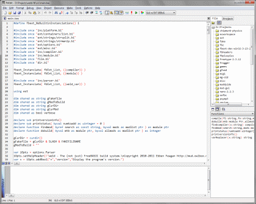

Gallery of Notable Applications
Top Games (Chosen by FBGD)
Lynn's Legacy
A wonderful Zelda-style action/adventure game. The game features excellent gameplay enabled by a very smooth and well coded engine. The graphics are excellent, and the music and sound effects are very good. Lynn's Legacy is a quite large game with a progressive and well developed story, offering around 10 hours of play time. The gameplay features real-time battles (including boss enemies), interaction with non-agressive characters (dialogues), many items to find and use, and a very large world to explore.
This game is an admirable effort, and the best FreeBASIC game at the time of its release. More Information
Barren
Barren is a very good 2D first person adventure game in which you play a humanoid creature of unknown past, stranded in a strange deserted valley. The game's relatively short length to those experienced with it is of little significance, as the first time you play through this game, you will be challenged and amazed by Lachie's creative puzzles and storyline. The game contains quite a number of Easter Eggs as well as a fairly interactive environment. Even most seemingly irrelevant artifacts in the game have their own personal reaction.
The art work is some of the most interesting I've ever seen. It's dark/mystical-themed - not in a way which will give you nightmares, but you may find your chest chill on the inside as you progress through the story. The music featured in the game (9 unique tracks total) goes along with the game perfectly. More Information
Prompt Critical
An excellent and unique 3D first person perspective space shooter. You are a wormhole defender in some space-like environment and must protect yourself from hostile objects that are being spawned from the center of two huge rotating rings that make the wormhole. Prompt Critical features great presentation and very slick game design overall. The graphics are excellent and atypical, although the total volume of it is rather limited, while the music and sound effects are great. I especially love the main track that accompanies the game. The gameplay is not on the level of visuals and sound, although it is intense and has a good replay value, with different difficulty levels, end boss and online scoreboards.
The gameplay doesn't have a clear learning curve, with some rounds ending up disappointing on pure chance, while some earlier resulting in much higher score leaving the player to question the value of experience in this game. Also, the fact that enemies and their projectiles almost always invade on your left side makes the gameplay feel somewhat one-sided and almost completely diminishes the usage of tactics. Still, the great technical achievements of Prompt Critical make it a much worthy download. More Information
Applications
FBedit
FBedit is a full fledged IDE (Integrated Development Environment) for the FreeBASIC language and developed in FreeBASIC using the Windows API. Features an integrated debugger and many of the same features expected in a modern IDE. FBedit is also extensible by plugins so it can expand to be exactly what you need. More Information
While FBedit is written in FreeBASIC it is not the only IDE for FreeBASIC. A partial list:
- FBIde - Classic IDE for FreeBASIC written in C++ using WxWidgets. (Windows)
- Geany - IDE with support for many languages including FreeBASIC. Cross platform support makes this a great IDE choice if you use Windows and Linux and would like a similar interface everywhere.
FBHelp
FBHelp is a documentation browser for FreeBASIC similiar to the help system found in QuickBASIC and other DOS programs. While it retains the classic look, FBHelp is a modern program that works on all supported platforms. The help file is the built from the same source as the User Manual and contains most of the same content. More Information